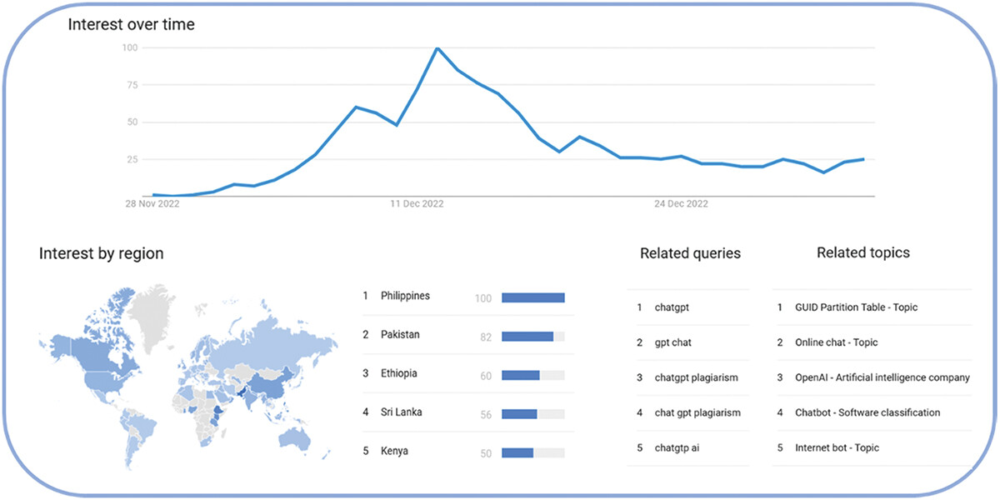

AI in Education
AI tools such as ChatGPT have rapidly entered education, changing how students complete assignments and learn concepts.
- Students now have instant access to explanations and solutions.
- This shifts learning from effort-based to tool-assisted.
- The question becomes whether students are learning or simply generating results.
Benefits of AI
The article makes it clear that AI is not purely negative and does provide real value.
- Helps students understand difficult concepts faster.
- Provides structured explanations and examples.
- Supports personalized and interactive learning.
- Can improve productivity when used correctly.
The Cheating Problem
The main concern in the article is how easily AI can be used to complete work without real understanding.
- Students can generate essays, answers, and solutions instantly.
- The output is often high-quality and difficult to distinguish.
- This allows students to pass assignments without actually learning.
Why Detection Fails

The rise in AI usage makes the problem even more difficult to control.- AI-generated work is original, not copied.
- Traditional plagiarism tools struggle to detect it.
- As AI adoption increases globally, misuse becomes more widespread.
Impact on Students
This creates a long-term issue in computer science education and beyond.
- Students may complete work without understanding the material.
- Struggle and problem-solving, which drive learning, are reduced.
- Students appear competent but lack real knowledge.
- This can carry into internships and professional roles.
Adapting Education
The article suggests that the solution is not banning AI, but adapting to it.
- Schools need clear guidelines for AI usage.
- Students should be taught how to use AI ethically.
- Assessments should focus more on understanding than output.
- AI should be used as a tool for learning, not a shortcut to results.
Student Survey
Scan the QR code below to participate in our survey.